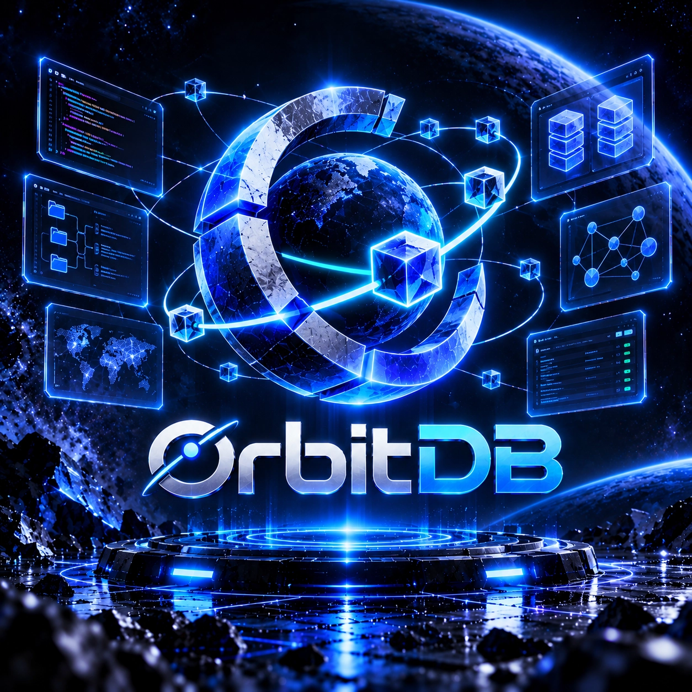

XIOM project -- experimental, pre-alpha
OrbitDB
An embedded database engine in pure XIOM: B-tree index, write-ahead log, query engine, transactions and crash recovery, organised as a layered engine on the shared durable-systems substrate. It reuses the ecosystem's core primitives instead of copying them.
OrbitDB is in development. The code is public on GitHub, and there are no downloads yet.
Package: xiom.orbitdb -- the embedded engine, codename Satellite (live on the registry, incubating).
Standalone: Station -- the PostgreSQL-class server tier with standalone releases (pending).
What works today
OrbitDB is pre-alpha. The embedded engine (Satellite) has a durable write-ahead log with fsync at every commit, snapshot and replay recovery, transactions with savepoints and MVCC snapshots, typed rows, a query planner with secondary indexes, and a paged storage layer with a bounded cache. The conformance suite passes 166/166 on Windows and WSL, and crash-recovery tests pass for the block store, transactions and the server tier. A 1,000,000-key soak stays under a 4 GB cap at a 1.83 GB peak with exact sample verification. A server tier (Station) is planned on the same engine: it targets trusted networks and local use, with the ORBITWIRE protocol frozen and crash recovery verified -- graceful shutdown and session-loop hardening are the remaining work. SQL is planned for the server tier only: Station will add a SQL front-end over the same engine and file format, while the embedded tier stays typed-only. SQL is not available yet.
B-tree index
Insert, search and delete on a flat-array B-tree, churn-proven against a model.
Range queries
Low/high scans, min/max and in-order traversal.
Write-ahead log
Append, replay and truncate; durable segment file.
Crash recovery
Disk WAL and page file with crash-recovery tests for the block store, transactions and the server tier; torn-tail healing.
Query engine
A query path with a planner, secondary indexes, and equality/range filters.
Schema catalog
Schema definitions with validation.
Pages and buffer pool
A paged storage layer with a bounded cache; the v2 byte container is the default (v1 auto-detected, migrates on write).
Tuple codec and CRC32C
Byte-packed records; checksums verified on read.
Conformance suite
166/166 on Windows and WSL.
Transactions
Transactions and savepoints with MVCC snapshot pins.
fsync durability
The standard library fsync and sync-write primitives back the durable log path; commit acks are power-loss honest up to the synced seams, and the hardware power-loss test matrix is the remaining step.
Roadmap
ORBITDB is a pre-1.0 storage engine for the XIOM stack: an embedded tier (Satellite) with a crash-tested WAL, typed rows and a query path, and a server tier (Station) planned on the same engine.
Two-tier direction: the embedded engine (Satellite) is the release line, with a PostgreSQL-class server tier (Station) planned on the same engine -- never a fork. Station v1 is for trusted networks and local use until TLS support lands. Both are pre-alpha today.
SQL is planned for the server tier only: Station will add a SQL front-end over the same engine and file format, while the embedded tier stays typed-only. SQL is not available yet.
Now: hardware power-loss testing and finishing the Station v1 work.
| Phase | Focus | Status |
|---|---|---|
| 0 | In-memory core | Done |
| 1 | Durable pages and pager | Done |
| 2 | Disk WAL and durable recovery: fsync, snapshot and replay, torn-tail, crash tests | Done |
| 3 | Query, types and isolation: typed rows, predicates, secondary indexes, planner, MVCC | Done for the current scope |
| 4 | 1.0 hardening -- Satellite | In progress: hardware power-loss matrix, multi-process safety, 5M-key memory target, CI on Linux and Windows, signed reproducible releases with an SBOM, a stable C ABI and thin Python binding, one external pilot. |
| 5 | Station v1 core | In progress: ORBITWIRE v1 frozen; graceful shutdown and session-loop hardening, then reader snapshots; trusted networks and local use. |
| 6 | Station SQL front-end | Planned after v1, subset-first; Satellite stays typed-only. |
| 7 | Production-grade server | Planned: auth and TLS, replication and failover, range sharding, operations tooling, scale benchmarks. |
| 8 | Ecosystem | Ongoing: bindings, docs, tutorials, crash corpus, pilots, release cadence. |
The roadmap is ordered, not scheduled. Production grade means proven: power-loss tested on real hardware, documented multi-process behaviour, a published memory budget, signed reproducible releases with an SBOM, a stable API, operations docs, a security review and a real pilot. Until then OrbitDB stays pre-1.0. Pre-alpha: the engine works, but do not put production data in it yet.
Downloads
No public downloads yet. Releases and installers will follow when the release gates pass.